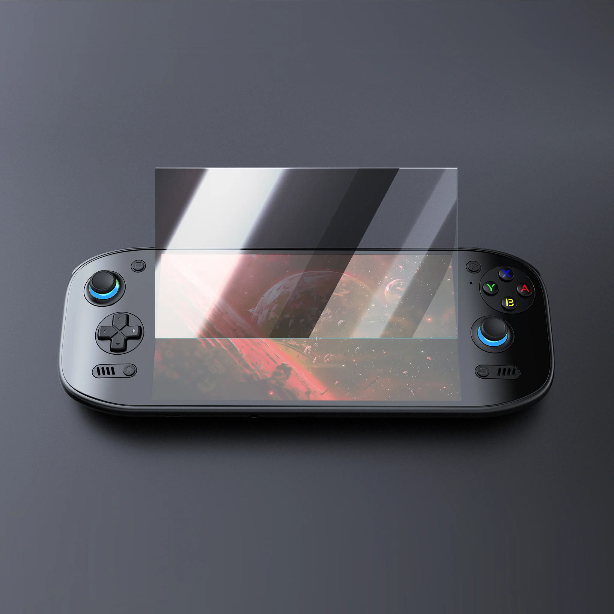

Odin2 Portal Protector de pantalla

Preserva la nitidesa i la sensibilitat tàctil de la pantalla de la teva potent Ayn Odin2 amb aquest protector de pantalla d'alta qualitat. Fabricat amb materials resistents i transparents, aquest protector ofereix una defensa eficaç contra rascades, ditades, pols i altres elements que podrien comprometre la teva experiència visual. Dissenyat específicament per a les dimensions de la pantalla de l'Odin2, s'aplica fàcilment sense generar bombolles i manté la claredat i la resposta tàctil originals. Inverteix en la protecció de la pantalla de la teva Ayn Odin2 i continua gaudint dels teus jocs i aplicacions amb una visió impecable.